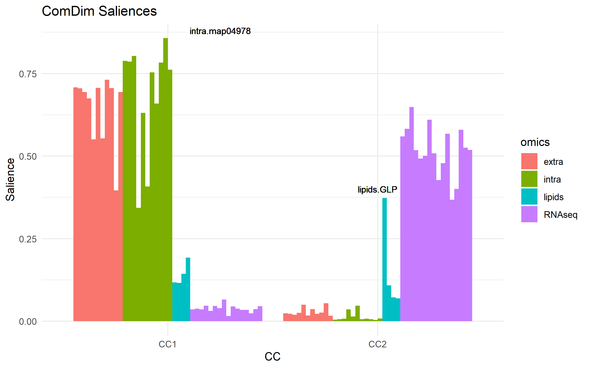
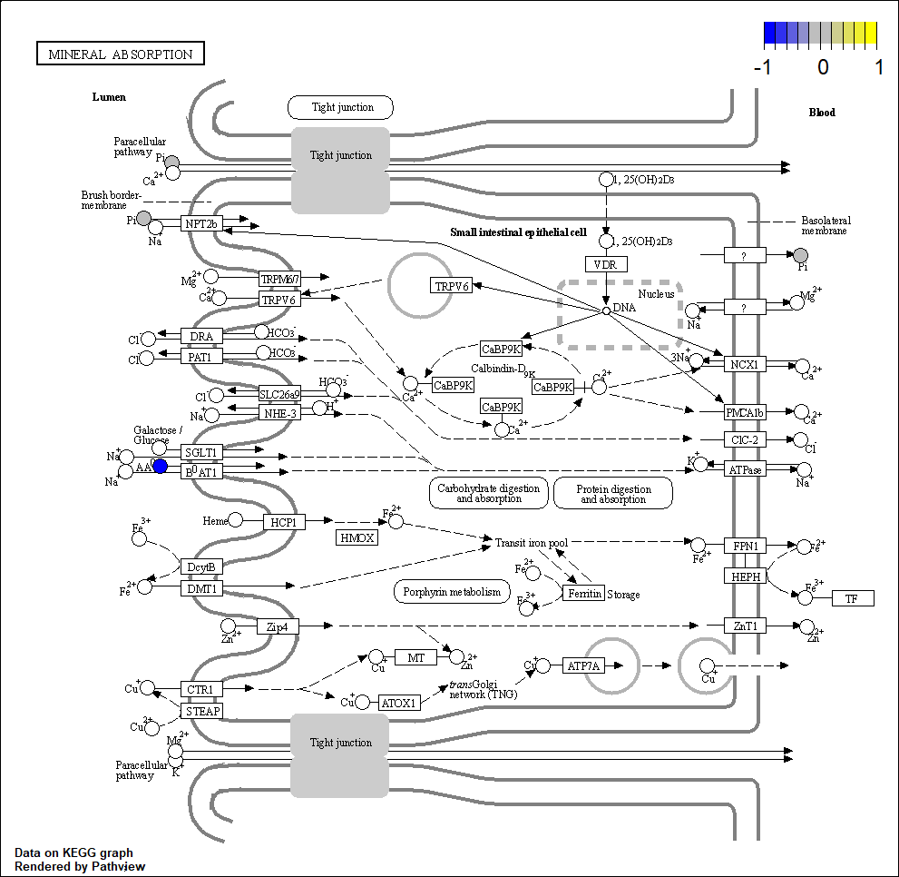
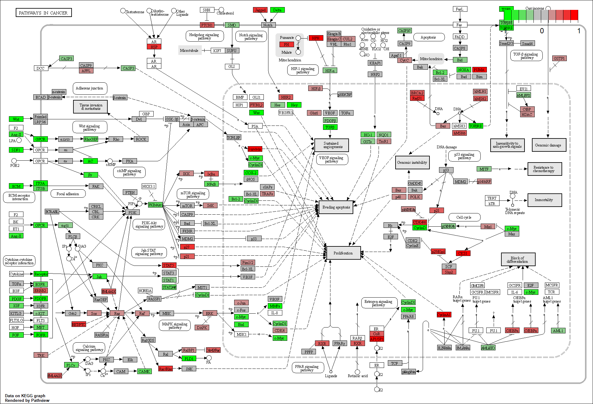

Chapter 6 Data from a single omics data are multi-blocks
Metabolic pathways are composed by a group of related metabolites. Extrapolating
this concept into the MultiBlock domain, it is possible to convert a
metabolomics dataset into a MultiBlock, where each of the blocks will be
characteristic of one metabolic pathway.
This strategy can be applied to other types of omics datasets. For example,
transcriptomics datasets can be transformed to MultiBlocks by the
Gene Ontology information, and phylogenetic data can be split according
to any of the taxonomic levels (class, family, gender, species,…).
In the R.ComDim package, this data transformation can be mediated with the
ExpandMultiBlock() function and a reference metadata file with the list of
categories each variable can be listed in. In the resulting MultiBlock, a
variable will be included in as many blocks as groups (i.e. molecular function)
it belongs to.
data(mouse_ds)
lipidsMB <- ExpandMultiBlock(data = lipids, metadata = metadata_lipids,
minblock = 0, loquace = FALSE)
extraMB <- ExpandMultiBlock(data = extra, metadata = KEGG_table_metabolites,
minblock = 10, loquace = FALSE)
intraMB <- ExpandMultiBlock(data = intra, metadata = KEGG_table_metabolites,
minblock = 10, loquace = FALSE)
RNAseqMB <- ExpandMultiBlock(data = RNAseq3[,1:12],
metadata = metadata_RNAseq3,
minblock = 500, loquace = FALSE)
# We can count the number of blocks in each MultiBlock
length(getBlockNames(lipidsMB)) # 4 blocks
length(getBlockNames(extraMB)) # 12 blocks
length(getBlockNames(intraMB)) # 12 blocks
length(getBlockNames(RNAseqMB)) # 16 blocksSince the blocks from this MultiBlock are related to a specific biological
role, the ComDim analysis can be used to determine the biological roles more
important in the the studied dataset.
In the MultiBlocks above, we only kept those blocks containing equal or more
than minblock variables (i.e. only the RNAseq-related blocks containing 500 or
more variables were kept).
In order to find the most relevant pathways, ComDim will consider all blocks
equally important, causing that the variables from the smallest blocks will
contribute more to the final model than the variables from the largest blocks.
Then, the minblock filter is applied to avoid that the smallest blocks
(which usually relate to poorly-characterized biological roles, and thus hardly
interpretable) influence the ComDim model construction.
Let’s continue with the example from before, but before the ComDim analysis we can apply some data transformations.
# Blocks are relabelled for clarity
lipidsMB <- setBlockNames(lipidsMB,
paste("lipids", getBlockNames(lipidsMB), sep = '.'))
intraMB <- setBlockNames(intraMB,
paste("intra", getBlockNames(intraMB), sep = '.'))
extraMB <- setBlockNames(extraMB,
paste("extra", getBlockNames(extraMB), sep = '.'))
RNAseqMB <- setBlockNames(RNAseqMB,
paste("RNAseq", getBlockNames(RNAseqMB), sep = '.'))
allMB2 <- BuildMultiBlock(RNAseqMB, lipidsMB, intraMB, extraMB)Now, all 4 MultiBlocks were merged into a single MultiBlock, and each block
contains a suffix denoting the omics data type.
We apply some data pre-processings:
# We apply some pre-processings
library(DESeq2)
# Remove blocks relative to map01100
# (not very informative, it's the map with all metabolic pathways)
allMB2 <- ProcessMultiBlock(allMB2,
blocks = which(grepl('map01100', getBlockNames(allMB2))),
# All blocks with map01100 are deleted, since ncol(x) is always > 0.
FUN.SelectBlocks = function(x){ncol(x) < 0})
# Calculate the absolute maximum from the RNAseq data.
maxMB <- max(MultiBlock2matrix(allMB2,
blocks = grep('RNAseq',getBlockNames(allMB2))
),
na.rm = TRUE)
# Exclude normalized variables with max intensity reported below 0.1%
# of the max from all RNAseq blocks.
allMB2 <- ProcessMultiBlock(allMB2,
blocks = grep('RNAseq',getBlockNames(allMB2)),
FUN.SelectVars = function(x) {apply(x,2,max) > maxMB * 0.001})
# Add 1 to each value in RNAseq data to remove 0s.
allMB2 <- NARemoveMultiBlock(allMB2,
blocks = grep('RNAseq',getBlockNames(allMB2)),
method = 'fixed.value.all',
constant = 1)
# Do rlog transform of the RNAseq data.
allMB2 <- ProcessMultiBlock(allMB2,
blocks = grep('RNAseq',getBlockNames(allMB2)),
# Normalize rlog transcript counts
FUN = function(x){t(DESeq2::rlog(t(x)))})
# Replace NAs by random noise
allMB2 <- NARemoveMultiBlock(allMB2, method = 'random.noise')
# Normalize (mean-center and divided by each block-norm)
allMB2 <- NormalizeMultiBlock(allMB2, method = 'norm')We continue with the ComDim analysis:
resultsPCA2 <- ComDim_PCA_MB(allMB2, ndim = 2)A first look at the scores can tell us how the blocks relate to the sample type.
scoresTable <- MakeComDimScoresTable(model = resultsPCA2)
scoresTable_wider <- scoresTable %>%
mutate(sample.type = case_when(grepl('DOX', sample.id) ~ 'DOX',
grepl('NI', sample.id) ~ 'NI',
grepl('OFF', sample.id) ~ 'OFF')) %>%
dplyr::select(sample.id, sample.type, block.name, scores.type.dim, value) %>%
dplyr::group_by(sample.id, sample.type, scores.type.dim, block.name) %>%
pivot_wider(names_from = scores.type.dim, values_from = value) %>%
mutate(omics = case_when(grepl('RNAseq', block.name) ~ 'RNAseq',
grepl('lipids', block.name) ~ 'lipids',
grepl('extra', block.name) ~ 'extra',
grepl('intra', block.name) ~ 'intra',
grepl('Global', block.name) ~ 'Global'))
ggplot(data = scoresTable_wider) +
geom_point(aes(x = T.scores1, y = T.scores2, color = sample.type, shape = omics)) +
geom_point(aes(x = Q.scores1, y = Q.scores2, fill = sample.type),
size = 3, shape = 24, color = 'black') +
theme_minimal() +
labs(title = 'ComDim scores', x = 'CC1', y = 'CC2')Figure 6.1: Scores
The metabolomic and the RNAseq profiles appear to be very orthogonal (uncorrelated), since intra and extra does not change much (within each group) in CC2 whereas the RNAseq does not change much in CC1. For RNAseq molecular functions, CC1 separates OFF from NI and DOX. CC2 separates DOX from NI and OFF. Despite this, NI seems to be different from DOX and OFF at the lipidomic level.
6.1 Molecular functions
Let’s start by looking at the saliences:
# Plot saliences
saliences2 <- resultsPCA2@Saliences %>%
as.data.frame() %>%
mutate(dataset = rownames(.)) %>%
pivot_longer(cols = c('CC1','CC2'),
names_to = 'CC',
values_to = 'Salience') %>%
mutate(omics = case_when(grepl('RNAseq', dataset) ~ 'RNAseq',
grepl('lipids', dataset) ~ 'lipids',
grepl('extra', dataset) ~ 'extra',
grepl('intra', dataset) ~ 'intra'))
ggplot(data = saliences2,
aes(x = CC, y = Salience, group = dataset )) +
geom_bar(stat = 'identity', position = 'dodge',
aes(fill = omics)) +
theme_minimal() +
geom_text(label = 'lipids.GLP', x = 2, y = 0.4, size = 3) +
geom_text(label = 'intra.map04978', x = 1.25, y = 0.88, size = 3) +
labs(title = 'ComDim Saliences') CC1 is descriptive of metabolomics data (both intra and extra) CC2 is descriptive of RNAseq and glycerophospholipids (lipids.GLP) The most altered molecular function is map04978 (mineral absorption), in the “intra” data.
6.1.1 The molecular patwhays
By inspecting the loadings, we can have an idea of the most altered omics features in the block. We will plot now the loadings for the two most relevant blocks as seen in the previous section.
# MINERAL ABSORPTION
LoadingsTable <- MakeComDimLoadingsTable(model = resultsPCA2,
block = 'intra.map04978',
dim = 1)
ggplot(LoadingsTable, aes(x = variable.id, y = value)) +
geom_bar(stat = 'identity') +
labs(title = 'MINERAL ABSORPTION') +
theme_minimal() +
theme(axis.text.x = element_text(angle = 90, vjust = 0.5, hjust=1))
# GLYCEROPHOSPHOLIPIDS
LoadingsTable <- MakeComDimLoadingsTable(model = resultsPCA2,
block = 'lipids.GPL',
dim = 2)
ggplot(LoadingsTable, aes(x = variable.id, y = value)) +
geom_bar(stat = 'identity') +
labs(title = 'GLYCEROPHOSPHOLIPIDS') +
theme_minimal() +
theme(axis.text.x = element_text(angle = 90, vjust = 0.5, hjust=1,
size = 3))
Figure 6.2: Mineral absorption

Most important changes in the GPL group occur for PC36:2, PC34:1, PC:34:2, PE36:2, PC36:1,…
We can also plot the loadings into KEGG pathway maps (if the omics variables can be matched with the KEGG identifiers).
Here is an example for the metabolomics data:
# MINERAL ABSORPTION
# Prepare input data
loadingVector <- LoadingsTable$value * 10 # 10 is a factor used to maximize
# the color contrast in the resulting
# KEGG map.
names(loadingVector) <- gsub("map04978.","",LoadingsTable$variable.id)
library(pathview) # From Bioconductor
pv.out <- pathview(cpd.data = loadingVector,
pathway.id = "04978",
species = "mmu",
out.suffix = "ComDim")The map is saved in the working directory: 
And here, there is an example for the RNAseq-data (block mmu05200, “Pathways in Cancer”):
LoadingsTable <- MakeComDimLoadingsTable(model = resultsPCA2,
block = 'RNAseq.mmu05200',
dim = 2)
# Prepare input data
loadingVector <- LoadingsTable$value * 10 # 10 is a factor to maximize
# the color contrast in the
# resulting KEGG map.
names(loadingVector) <- gsub("mmu05200.","",LoadingsTable$variable.id)
library(pathview) # From Bioconductor
pv.out <- pathview(gene.data = loadingVector,
pathway.id = "05200",
species = "mmu",
out.suffix = "ComDim")